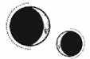

CAPÍTULO 73
Julius 1789
Helena recorrió la habitación con la mirada. Pese a que era pleno verano, en el interior todavía hacía frío, pues el hierro no se prestaba demasiado a la calidez. Las sábanas estaban manchadas de sangre y el olor de la putrefacción flotaba en el aire, como si la necrosis estuviera corrompiendo cada centímetro de su vida.
Estar encerrada y, al mismo tiempo, temer salir de su prisión era una paradoja de lo más extraña.
Se acercó a la ventana después de oír gritos y vio a Kaine saliendo por la puerta delantera de la casa. Ya se movía con mucha más soltura. Atreus se había quedado en el umbral y estaba tan encolerizado que Helena apenas alcanzaba a distinguir lo que decía.
Kaine, por su parte, se limitó a entrar en los establos para sacar a Amaris y subirse a su lomo con una agilidad de lo más convincente.
Atreus seguía gritando cuando la quimera alzó el vuelo, agitando el puño hacia el cielo. Ver el cadáver de Crowther en movimiento siempre le ponía los pelos de punta a Helena.
Cuando por fin se cansó de vociferar, el hombre se detuvo un momento y levantó la mirada para clavarla directamente en la ventana a la que estaba asomada. Ella retrocedió enseguida, pero ya era demasiado tarde: la había visto. Un inexplicable pavor le caló hasta la médula.
Se acercó a comprobar que la puerta estuviera bien cerrada y que su revestimiento de hierro, al igual que el de las paredes, siguiera intacto. La habitación estaba atrincherada. Atreus no tenía forma de entrar.
Más tranquila, se sentó a estudiar el sello que había diseñado y trazó sus líneas con los dedos. El diseño funcionaba, podía proporcionarle el poder y la estabilidad que necesitaba, pero no servía de nada. Para utilizarlo requería cinco materiales y ella solo tenía tres.
Había perdido demasiado tiempo.
Enterró el rostro entre las manos durante un momento, pero lo alzó de golpe cuando un olor a humo y a carne quemada le inundó las fosas nasales. Un humo negro empezaba a colarse en la habitación; la puerta se estaba carbonizando y el hierro que la revestía ardía con un brillo rojo cada vez más intenso.
—¡Sal de ahí, pequeña prisionera, sal! —dijo la voz de Crowther desde el otro lado—. Solo quiero hablar contigo.
Helena vio horrorizada que la madera se consumía y dejaba al descubierto la silueta de Atreus tras los barrotes de hierro. El resplandor rojizo del fuego le daba un color a su piel gris y muerta que casi le hacía parecer vivo.
Los barrotes que le impedían entrar en la habitación siguieron calentándose y pasaron del color rojo al naranja, mientras que la habitación prendió fuego y el papel de pared empezó a arder de manera espontánea. El recipiente de cristal de la esquina estalló con un chasquido y el ojo que contenía cayó entre las llamas que lamían la pared.
Crowther jamás se habría molestado en recurrir a la piromancia para manipular un material tan inferior, pero Atreus Ferron, el maese del hierro, intentaba hacer que el metal se doblegara a su voluntad una vez más. Si no lo conseguía, lo más seguro era que acabara quemándola viva en aquella habitación.
—¿Qué quieres?
—Tengo que hacerte una pregunta. Acércate. —Al ver que Helena vacilaba, insistió—: No creo que quieras morir asfixiada aquí dentro, ¿verdad? —La alfombra comenzaba a echar humo—. Te digo que te acerques.
Dio un paso hacia él con cuidado, procurando mantenerse lo más alejada posible de las zonas donde el calor era más intenso. Esperaba que Atreus no hubiera aprendido a utilizar la piromancia a distancia como Luc y Crowther.
Una sonrisa aterradora se extendió por el rostro del hombre.
—He habitado muchos cuerpos a lo largo de los años, pero es curioso… Este sufre una reacción violenta cada vez que te ve. Lo conocías, ¿verdad? Al menos, eso creo.
Helena trastabilló. No sabía que los liches retenían los recuerdos de los cadáveres que ocupaban, pero tenía sentido que quedaran ciertos vestigios de sus huéspedes.
—Al principio no me acordaba de ti. Pensaba que no era más que una reacción del cadáver, pero, al verte atacar a mi hijo, me vi transportado a aquella noche. El cuerpo que manejaba entonces llevaba tanto tiempo muerto que apenas tenía recuerdo de él, pero tú quedaste grabada en mi memoria. El Sumo Nigromante estaba encantado de que por fin fuéramos a obtener respuestas sobre la explosión. Como recompensa, compartió conmigo algunas de las técnicas que requiere su resonancia.
Los dedos largos de Crowther se retorcieron y el calor se intensificó.
Helena no dijo nada. El hierro que los separaba brilló más intensamente y la pared empezó a echar humo mientras se abrasaba. Atreus estaba conteniendo el fuego, pero bien podría reducir la habitación a cenizas si se lo proponía.
El calor del hierro al rojo vivo distorsionaba el aire y amenazaba con calcinarle la piel.
—Aquella explosión fue un ataque de lo más curioso. Ese zoquete de Lancaster se volvió loco al verte. Según me dijeron, todo fue culpa tuya, pero estoy al tanto de tu historial. No eres nadie. No estás entrenada ni tienes experiencia en combate. ¿De verdad esperan que me crea que una sanadora de poca monta fue la única responsable de uno de los ataques más devastadores que hemos sufrido nunca?
Stroud también había mencionado la falta de información que había sobre ella. En su momento, no le había dado importancia, puesto que casi siempre habían tendido a considerar su trabajo de sanadora como una intercesión religiosa en vez de una labor médica, pero Crowther había hecho que firmara los documentos de los prisioneros, la había atado a él. Por si fuera poco, también estaban todas las medicinas e inhibidores que había desarrollado con Shiseo. La bomba. Seguro que había registros de todo aquello.
A no ser…
Kaine no habría querido que llamara la atención de los inmarcesibles y, si habían colocado a Shiseo en la Central para interceptarla en caso de que reapareciera…, tampoco podían permitirse que la relacionaran con él.
—Te usaron como señuelo, ¿verdad? —dijo Atreus interrumpiendo el hilo de sus pensamientos—. Todo el mundo sabe cómo trataban a los tuyos. Eras la candidata perfecta que sacrificar a cambio de proteger al último miembro vivo de la Llama Eterna.
Esbozó una sonrisa maniaca y su rostro se iluminó con una expresión triunfal.
Helena había dado por hecho que Atreus había ido a buscarla porque sospechaba de ella después de lo ocurrido con Kaine, pero no, su misión lo cegaba y, como interrogar a todas aquellas víctimas no había dado resultado, había decidido centrarse en ella.
—Te enviaron aquí porque sabes algo de vital importancia. El Sumo Nigromante le confió a mi hijo la tarea de averiguar el qué, pero ahora está tan preocupado por lo que crece en tu interior que ha olvidado que tú conoces la identidad del asesino, de la persona que puso una bomba en el banquete y en el laboratorio del puerto Oeste. Una vez que lo capture, el Sumo Nigromante ya no tendrá nada que temer.
Un resplandor amarillo se extendió por el hierro y los barrotes empezaron a derretirse.
—No me acuerdo —dijo Helena. Su sangre estaba ejerciendo una presión atronadora en sus oídos mientras el calor era cada vez más intenso sobre su piel. Cada vez le costaba más respirar—. No recuerdo nada de lo sucedido. El Sumo Inquisidor intentó sacarme la información, pero se ha perdido, si es que alguna vez lo supe.
—No te creo.
Atreus dio un paso atrás y le asestó una patada a la puerta. Los barrotes de hierro fundido se doblaron sobre sí mismos y cayeron al suelo. Cuando entró en la habitación, Helena alcanzó a ver una masa carbonizada desmadejada en el suelo. Uno de los sirvientes había intentado detenerlo.
El hombre la obligó a retroceder mientras chasqueaba los dedos y hacía que unas llamas rojas y ardientes se materializaran a su alrededor.
—Mi hijo se pasa las horas preocupado por ti y por tu delicado corazón —dijo con voz inquisitiva—, como si fueras una flor exótica. Kaine cree que el camino hacia el éxito consiste en actuar como un esclavo obediente. —Negó con la cabeza—. Siempre le ha tenido demasiado miedo al fracaso como para entender que alcanzar el éxito implica correr riesgos…
La voz de Atreus se apagó y Helena desvió la mirada hacia la ventana, rezando desesperadamente por ver a Amaris de regreso.
—¿Estás esperando que venga a por ti? —De cerca, Atreus resultaba aterrador. La agarró del brazo y la arrastró hasta la ventana, presionándola contra el cristal—. ¿Crees que mi hijo vendrá a salvarte?
A Helena se le cerró la garganta cuando los dedos finos y alargados de Crowther se le enterraron en el brazo y sintió que el enrejado de hierro de la ventana se le clavaba en la piel. No vio ninguna criatura surcando el cielo.
Estaba sola.
Nunca se había enfrentado a un piromante. Si intentaba defenderse usando la resonancia, delataría a Kaine. Atreus sabría de inmediato quién le había quitado el anulitio de los grilletes, así que tendría que matarlo. No podía permitirse vacilar. Tenía el cuchillo de obsidiana escondido bajo el colchón, pero la cama estaba ardiendo, al igual que el resto de la habitación.
Atreus acercó su rostro al de ella y contempló el cielo despejado a través del cristal. El aroma a lavanda que desprendía su piel casi quedaba enterrado bajo el hedor a sangre de su ropa.
—Le has cogido cariño, ¿no es así? Puedes decírmelo. Al fin y al cabo, te saca a pasear y te tiene en esta habitación con todo lujo de comodidades y sirvientes que te protegen y se mantienen a tu entera disposición. Yo creo que le gusta tener a una criaturita como tú, tan ansiosa por complacer a sus amos. Los Holdfast te han adiestrado bien.
Helena apenas logró tomar una bocanada de aire entrecortada.
—Mi hijo disfrutará mucho menos de tu compañía si me obligas a arrancarte las respuestas con fuego —dijo moviendo los labios de Crowther contra su oreja.
Una única oportunidad. Solo tendría una oportunidad para pillarlo desprevenido y arrancarle el talismán.
—No me acuerdo de nada —insistió mientras trataba de calcular lo rápido que tendría que moverse y decidir en qué dirección girar para zafarse de él.
—A lo mejor es que no lo has intentando con suficiente empeño.
Antes de que pudiera reaccionar, Atreus chasqueó los dedos y una ola de dolor se extendió por la espalda de Helena cuando su vestido prendió fuego. Fue como si le hubiera marcado los hombros con un hierro candente. Las piernas le cedieron mientras gritaba.
Entonces oyó un siseo y las llamas que le devoraban la espalda desaparecieron. Sin embargo, ni el dolor ni el calor remitieron. Movió la boca sin emitir ningún sonido. Lo vio todo blanco.
Olía a humo y a pelo quemado.
—Esa será tu única advertencia. No me mientas —le ordenó Atreus, que la alzó de un tirón y la sujetó contra la ventana aplastando sus quemaduras con el peso de su cuerpo y arrancándole un aullido ronco de dolor—. No suelo ser tan directo durante mis interrogatorios, pero no tengo tiempo de infundirte miedo poco a poco —le advirtió al oído—. Dime quién es el asesino o te haré daño de verdad.
—No lo sé… —dijo casi en un sollozo—. Te prometo que no lo sé.
—Kaine se va a llevar una decepción cuando te encuentre —suspiró.
Atreus chasqueó los dedos de nuevo y el fuego estalló contra su espalda como un látigo. Helena se estremeció con tal violencia que se golpeó la cabeza contra el cristal y estuvo a punto de perder el conocimiento. Los oídos le pitaban y todo pareció ralentizarse, pero el pánico dio paso a una lucidez extraña, somnolienta.
Kaine no iba a llegar a tiempo.
Después de sobrevivir durante tantos meses, se había agotado su suerte justo medio día antes de que todo hubiera acabado.
Atreus volvió a incorporarla.
—No soy tonto. Todo el mundo creía que había un espía entre nuestras filas durante el año previo a la derrota de la Llama Eterna, porque la Resistencia sabía demasiado. El Sumo Nigromante sospechaba que el traidor se encontraba entre sus confidentes, pero no lograron identificarlo. Es nuestro único cabo suelto. Las pruebas son irrefutables. Las masacres y los sabotajes nunca fueron propios de la Llama Eterna, así que esa persona también debe de estar detrás de las explosiones, incluyendo la que destrozó el laboratorio del puerto Oeste. Desapareció tras la batalla final y regresó al poco de que tú aparecieras, así que tú sabes quién es.
Helena trató de zafarse de su agarre y arañó el aire intentando alcanzarle la cara. Sabía que le bastaría con tocarlo, pero Atreus depositó todo su peso contra sus hombros abrasados y le arrancó un alarido estrangulado. Unos puntitos negros comenzaron a salpicarle la vista.
—Dime quién es —dijo zarandeándola.
—Kaine morirá… si me haces daño —respondió ella con voz ahogada.
El cuerpo se le estaba entumeciendo. Estaba tan conmocionada que su mente empezaba a disociarse, como si fuera un animalillo al que hubieran dejado colgando del pescuezo.
—El Sumo Nigromante me lo perdonará si con ello consigo atrapar al asesino.
Helena veía su rostro reflejado en el cristal de la ventana. Su mirada albergaba un brillo de pura desesperación. Incluso con el rostro de Crowther, sus expresiones le recordaban tanto a Kaine que le ponían los pelos de punta.
—Kaine sobrevivirá. Ya engendrará más hijos.
Le daba vueltas la cabeza. El humo casi no le dejaba respirar y las llamas estaban a punto de devorar la estancia por completo.
Al comprender que no volvería a ver a Kaine nunca más, no pudo evitar buscarlo en el rostro de Atreus. Sus ojos eran tan esquivos como los de su hijo cuando hablaba. Además, tenían la misma desesperación furiosa que Kaine mostraba cuando se sentía acorralado, cuando creía que no tenía nada que perder.
Pese al desprecio que sentían el uno por el otro, Kaine había heredado los peores defectos de su padre.
Enid lo había sido todo para Atreus, y, ahora que ya no estaba, lo único que le quedaba era aferrarse a su fantasma. ¿Cómo habría sido Kaine si hubiera tenido cerca a alguien que le recordara constantemente a la persona a la que perdió? Tal vez se hubiera parecido más a Atreus, quien no era capaz de mantener las distancias con su hijo pese a no poder soportar su presencia.
Por fin lo entendió todo.
—Si no encuentras al asesino…, va a matar a Kaine, ¿verdad? El castigo que ha recibido no ha sido solo por lo de Hevgoss. También ha sido una advertencia para ti.
La expresión de Atreus se ensombreció por completo. La zarandeó con tal violencia que estuvo a punto de desmayarse.
—¿Quién es el último miembro de la Llama Eterna?
—Se parece a tu esposa, ¿no? Tiene los mismos ojos, la misma boca. Kaine es lo único que te queda de ella, pero, cada vez que lo miras, ves en él el odio que te tenía su madre. —Atreus levantó una mano y sus anillos de ignición centellearon—. Fui yo quien voló el laboratorio del puerto Oeste —se apresuró a decir antes de que prendiera fuego a los anillos—. Solía ayudar a Luc a estudiar piromancia. Se suponía que no debía hacerlo, pero trabajaba mejor en compañía. Apliqué los principios básicos y la teoría que acabé aprendiendo, incluso sin manejar ese tipo de resonancia, para diseñar las bombas, y luego las coloqué en el edificio con la ayuda de unos necrómatas. Porque yo soy el último miembro de la Llama Eterna que queda con vida. —Respiró hondo—. Pero tienes razón…, también había un espía. Yo era su contacto.
Un brillo triunfal surcó la mirada de Atreus. La victoria estaba al alcance de su mano.
—Pero no salvarás a Kaine al encontrarlo. El asesino al que buscas es tu propio hijo.
El hombre la miró estupefacto antes de retorcer el rostro con rabia. Le rodeó el cuello con ambas manos sin molestarse en usar la piromancia.
—Mi hijo jamás se aliaría con la Llama Eterna.
—Pues lo hizo. Odia a Morrough —graznó la chica—. Siempre lo ha odiado. ¿Nunca te has parado a pensar en lo que le pasó a tu familia después de que te arrestaran?
—Nada —resopló con desprecio—. Cuando Kaine mató al principado, mi desliz fue perdonado.
Helena negó con la cabeza.
—Entonces ¿cómo explicas la jaula de hierro inerte y el sello transmutacional que hay grabado en el suelo de esta misma casa? ¿Por qué murieron todos tus sirvientes? ¿De verdad crees que una persona como Morrough iba a mostrarse comprensivo durante los meses que Kaine tardó en regresar a la Academia?
Una sombra de duda surcó el rostro de Atreus.
—Morrough mantuvo a tu esposa encerrada en esa jaula y la torturó. La obligó a ver cómo le arrancaba el alma a tu hijo. Kaine mató a Apollo en un intento por salvarla. Y todo por tu culpa.
—¡Mientes!
Sabía que debería darle el golpe de gracia en ese momento, pero quería hacerlo sufrir.
Le agarró la cabeza con ambas manos, ignorando el dolor de sus hombros abrasados, y le lanzó una onda de resonancia directamente al interior del cráneo aprovechando que el hombre estaba demasiado aturdido como para defenderse.
Nunca había utilizado la animancia con un liche. Fue muy fácil, como hundir los dedos en una calabaza podrida. Su mente era sencilla. Carecía del ruido característico de una criatura viva. Sus pensamientos eran lineales, planos, y todos y cada uno de ellos giraban en torno a Kaine, pues era lo único que le quedaba de Enid.
Cuando Kaine había revisado sus recuerdos, Helena había notado la consciencia de él en su interior, al igual que sus emociones. No había nada que le impidiera a Helena mostrarle sus recuerdos a través de la conexión en vez de arrancárselos a él.
Quería que lo supiera todo, que fuese consciente de las consecuencias de sus actos.
Canalizó toda la rabia que tenía en su mente hacia el cerebro de Atreus.
Kaine estaba arrodillado ante ella y Helena tenía las manos extendidas hacia él.
—¿Ha… ha dicho alguien algo que pudiera incriminarte?
No. Eso no era lo que quería enseñarle. Trató de concentrarse.
Kaine la besaba, acunaba su rostro entre las manos y se cernía sobre ella en la cama presionando su cuerpo contra el suyo.
Sus recuerdos estaban desordenados y se solapaban. Ni siquiera sabía si ese recuerdo era reciente o no.
—A ti te arrancaron el alma del cuerpo. Si consigo volver a metértela dentro, puede que con el tiempo se reintegre, pero tendremos que encontrar una manera de asegurarla, al menos al principio. Igual… igual que con las filacterias.
—Necesitarías que otra alma se sacrifique.
Ella asintió, incapaz de levantar la mirada.
—Y tendría que ser por voluntad propia.
No, eso tampoco. Enid. Necesitaba mostrarle algo sobre Enid.
—Mi vida se desmoronó cuando volví a casa a los dieciséis años y, desde entonces, intenté aferrarme a lo que me quedaba. Tras su muerte, todo dejó de importarme…
Percibía la conmoción de Atreus, su indignada incredulidad. Entonces trató de apartarse de ella y Helena estuvo a punto de perder el control. La conexión entre sus mentes se tiñó de rojo.
El rostro encolerizado de Kaine, mucho más joven y con el cabello todavía oscuro, apareció ante ella.
—¿Sabes quién estaba con Morrough cuando llegó la noticia de que habían capturado a mi padre y había confesado su traición?
Atreus dejó de forcejear. Por su parte, Helena luchaba por respirar, pero tratar de cristalizar sus recuerdos había hecho que se perdiera en su memoria.
—En ocasiones mi madre se pasaba horas gritando.
Un calor abrasador la consumía, pero no podía detenerse.
—Ella insistía en que era culpa suya y, luego, se le paró el corazón…
Alguien levantó a Helena de un tirón. La cabeza se le cayó hacia atrás y, allí donde posó la mirada, vio el fuego trepando por las paredes, consumiéndolo todo.
Un rostro pálido apareció ante ella. Le costaba enfocar la mirada.
—Aguanta.
Aunque distorsionada, la voz era inconfundible. Extendió las manos con torpeza y el rostro de Kaine se volvió nítido con un parpadeo.
—Has venido… —Se aferró a él—. Supongo que siempre acabas viniendo.
—Aguanta. Voy a sacarte de aquí —le dijo bajándole las manos y presionándola contra su cuerpo.
Algo dolorosamente pesado se enroscó en torno a ella y Kaine la levantó del suelo. Helena arqueó la espalda por el dolor al sentir su brazo presionándole la piel abrasada, pero él la agarró con fuerza mientras la sacaba de la habitación en llamas. El pasillo estaba cubierto de humo y el fuego había empezado a propagarse por toda la casa, así que Kaine no se detuvo hasta que estuvieron fuera.
Helena respiró el aire limpio y fresco con avidez mientras él la tumbaba en el suelo.
—¿Qué ha pasado? ¿Qué te ha hecho? —preguntó Kaine, a quien le temblaban tanto las manos que ni siquiera era capaz de establecer un canal de resonancia estable.
Entonces, algo negro y enorme se cernió sobre ella y Amaris eclipsó el cielo hasta que su amo le ordenó que retrocediera.
Helena no logró pronunciar palabra. Los pulmones se contraían en busca de oxígeno y la cabeza le daba vueltas. Por si fuera poco, cada bocanada de aire era tan dolorosa que tenía ganas de gritar. Kaine siguió haciéndole preguntas, pero ella era incapaz de concentrarse.
Atreus salió al patio tambaleándose. Tenía el rostro manchado de humo y la expresión incendiada por la rabia.
Al verlo, Helena se aferró al brazo de Kaine.
—Sabe lo de tu madre. Lo siento. He tenido que decírselo.
—Da igual —dijo mientras se ponía de pie.
El humo negro estaba inundando el patio, como si la casa fuera ya un cadáver abrasado.
—¿Por qué no me has contado nunca lo que le pasó a tu madre? —preguntó Atreus con un gruñido.
Kaine se enfrentó a él con los hombros tensos.
—¿Habría cambiado algo?
Atreus se lanzó a por su hijo.
—Deberías habérmelo dicho. ¡Era mía!
Kaine dio un paso hacia un lado, aunque no con la fluidez que lo caracterizaba. Fue un movimiento rígido, acompañado de un espasmo en los dedos. Helena captó un atisbo de su rostro y vio que le brillaban los ojos.
—Ya, y eso le supuso un auténtico martirio, porque se lo contaste a Morrough. Nunca te preocupaste por los rumores que corrían por la ciudad, pero tuviste que hablarle de ella, decirle que lo era todo para ti y que harías cualquier cosa que te pidiera. La convertiste en tu prueba de fidelidad a la causa. —La voz de Kaine destilaba ira—. ¿Crees que a Morrough le importó cuánto tiempo pasaron torturándote? No, la clave fue que acabaste hablando. Y ella, tu más preciada posesión, quedó a su alcance. Tu amor la llevó directa a la tumba.
Los dedos largos y delgados de Atreus se curvaron con un destello de los anillos de ignición.
Kaine profirió una carcajada amarga.
—Debió de parecerles divertidísimo que siguieras siendo fiel a los inmarcesibles después de que te trajeran de vuelta. Y tienes el valor de llamarme a mí perro faldero.
La rabia le confirió un color violáceo a la piel grisácea de Atreus.
—Deberías habérmelo contado.
—¿Para qué? ¿De qué habría servido? ¿Cuál habría sido tu terrible venganza? No creo que hubiera merecido la pena poner en riesgo mi trabajo.
—¿Qué trabajo? ¿Acurrucarte y lloriquear entre las piernas de la zorra de Holdfast? —escupió haciendo entrechocar sus anillos.
La resonancia de Kaine surcó el aire y la chispa que su padre había prendido quedó suspendida en el aire cuando el hombre salió despedido en una dirección y los anillos de ignición en otra. Atreus aterrizó derrapando varios metros por la gravilla. Las llamas se apagaron. Cuando levantó la cabeza, una sangre violácea brotaba de las heridas que le surcaban el lateral del rostro.
—Mira tú por dónde —dijo Kaine, que se quedó de pie junto a él. Su voz destilaba pura maldad—. Parece que has vuelto a perder tu chispa, padre.